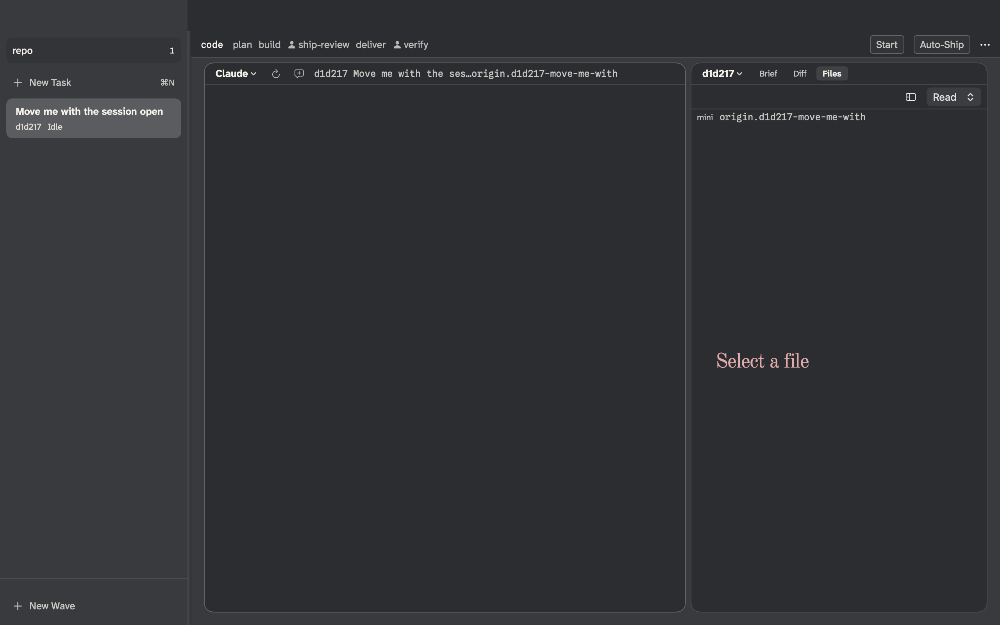
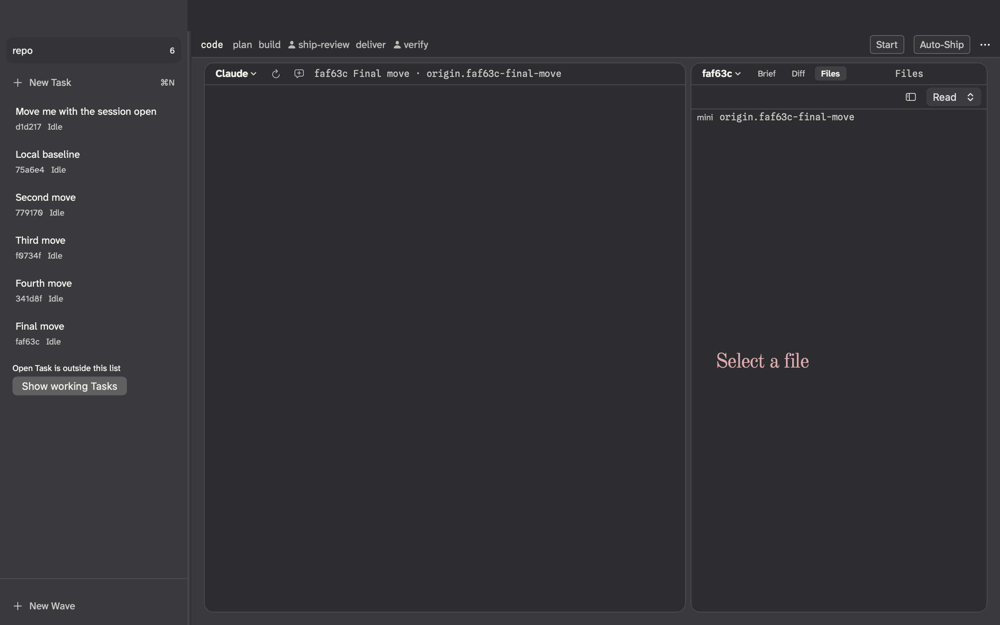
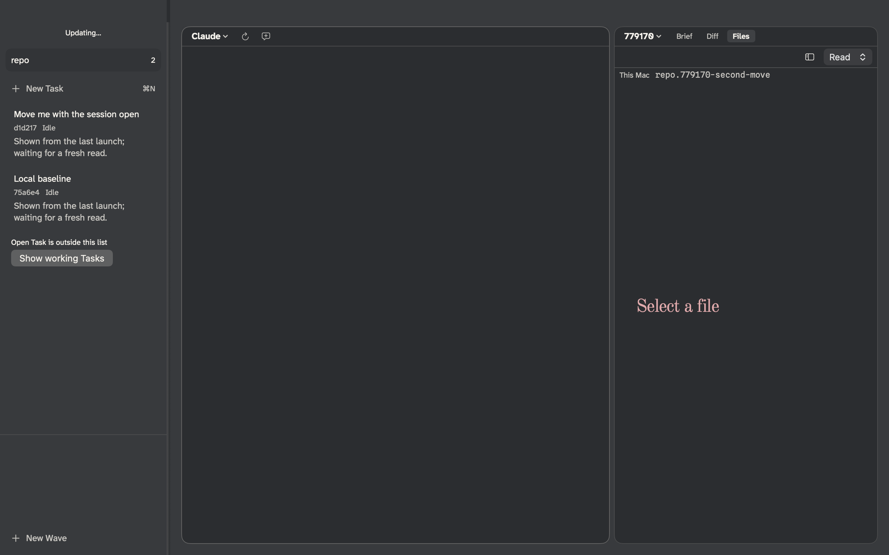
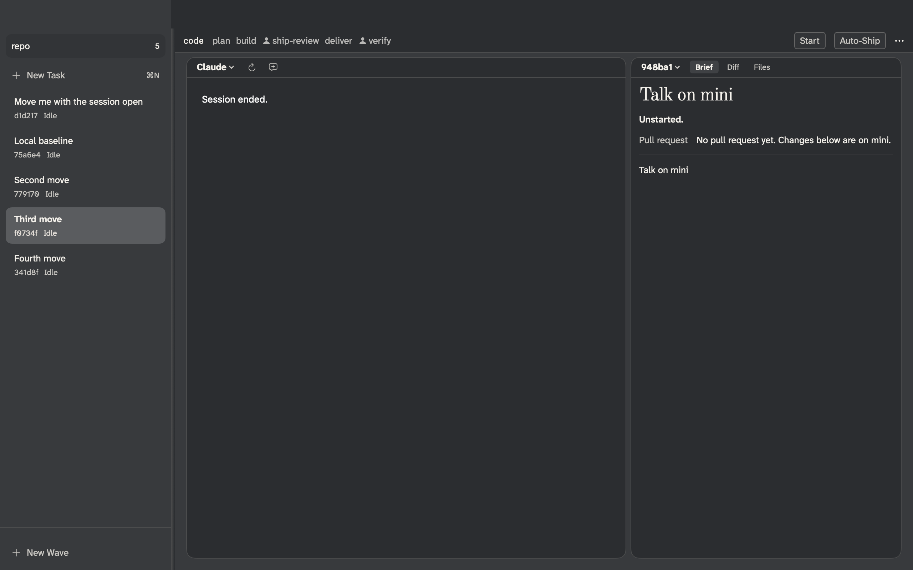

Laptop and mini as two private homes on this Mac, mini reached through a stand-in ssh, each running the branch lf server run. An isolated Dev bundle of Desktop with the QA hook, screen locked, on the laptop's home. Stand-in claude on each Machine prints where it runs and echoes lines read from its tty. Recipe: .lf/qa/remote-task-workspace.md. Earlier runs' reports are in git history (44e0611b51:scratch/qa.html).
| Scenario | What I did | What I saw |
|---|---|---|
| Move an open Task laptop → mini | Laptop Task with a running Session, shown in Desktop (pane usable, laptop provider). lf task move … --machine mini, no visit. |
Strip and Files switched to origin.d1d217-move-me-with on mini; no "Session location unavailable"; the pane showed provider on mini in …. (First run, before fixes: see the three rows below.) |
| Type into the moved pane | desktop send -p session |
Before: pane stuck at attachment: opening, input refused ("Session input is paused or held by another viewer"); same for a Task that was on mini from the start. A local Session reached usable. Cause: transport::relay_socket, the viewer for a ticket bridged to another Machine, passed no connection::Status, so Desktop never got a connected/native_ready reading. After: usable; mini printed mini received after the move. |
| Close and reopen a pane whose Session was born on mini | desktop close -p session, then focus |
Before: pane failed; the laptop server logged session.resume {id, task: null} → "Session 55a57e… was not found", and the Task fell back to its Not started page. Desktop's shared repository store prepared by bare id. After: the store names the Session's Task when the record is on another Machine; reopened usable, input reached mini, no "not found". |
| Move with a second window on the same repository | Relaunch restored a stale window ("Updating…") beside the live one; move a Task shown in both | Before, run 1: Desktop died at the move (AppKit DisplayCycle loop). Stack: SessionPaneView.browserTabs → SessionsWorkspace.files(for:) → TaskFilesStore.relocate during render; the two windows read the Task differently and moved the shared store back and forth. Run 2, after moving that relocation to onChange: main thread spun at 86% CPU until the app died; sample showed the workspace getter and workspacePanel both writing SessionsWorkspace.location during render from different readings. After both fixes: move completes, CPU 0.2%, pane usable on mini, input reaches mini. |
| Files after the move | desktop do files path=notes.txt | Header mini origin.341d8f-fourth-move. |
| Diff chip on a mini Task | Brief on Talk on mini | "No pull request yet. Changes below are on mini." |
| New conversation on a mini-owned Task | Tried the Session header icon, the ⌘/ popover, a fresh unstarted mini Task | Not reached. The header's plus.bubble is Reset session (two clicks on Talk on mini; no reset request reached the server). New conversation sits in the "…" menu and the ⌘/ popover, which the locked-screen hook cannot open; the ⌘/ key went to the stale window. A link to an unstarted mini Task starts its conversation on mini first, so the Not started page's New session button was never on screen. |
Moved Task, no visit: strip names mini's checkout (origin.d1d217-move-me-with), Files says mini. The terminal draws blank through cacheDisplay while locked; desktop capture read provider on mini in ….

The final build after a move with two windows open:

The stale restored window that shares workspaces with the live one (the second reader in the render loops):

Brief on a mini Task:

transport::relay_socket reports to Desktop through connection::Status; view decides reconnecting by whether it knows the held terminal (id), not by having a route. Test: open_remote_workspace now opens a bridged --here relay with LF_SERVER_STATUS and waits for connected + native_ready; it fails at that check without the fix.SessionsStore.preparationWork: a repository-wide store names the Session's Task when the record is on another Machine (only once this Mac's ID is known), for prepare and provider switch.SessionsWorkspace.filesPlace / follow: view bodies read Files with follow: false; browserTabs follows its window's reading with onChange.SessionsContentView.location(for:): the workspace getter and workspacePanel compute one location per workspace.cargo test -p loopflow --test integration machine_commands::open_remote_workspace ok, 13.8 s (fails without the transport fix, 46 s) cargo clippy -p loopflow-execution -p loopflow --all-targets -- -D warnings clean; cargo fmt scripts/test_desktop.sh --filter 'RemoteTaskWorkspaceTests|TaskFilesTests|WorkspacePanesTests|SessionsStoreTests|WarmPaneMountTests' 107 passed (first run 16 issues: preparationWork treated every Session as remote while localMachineId was unset; fixed) Dev build: move laptop → mini with two windows; close/reopen a mini-born Session; input reaches mini in both
desktop do action for it.RemoteTaskWorkspaceTests ("Session input ack" passed before the fix); that fixture does not exercise the pane's LF_SERVER_STATUS gate.unavailable: failed to run git rev-parse --verify 6e2f466…^{commit}: No such file or directory once; a read hit the moved checkout's old directory. It did not recur after the fixes.